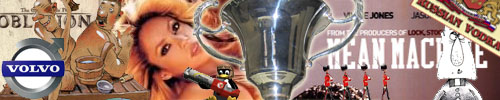

NQR11 Silver, who will bite the dust?

The 11th season of Nations Quake Rank reached its playoffs this week and therefore it is obviously time to take a look at the playoff match ups. Silver division group stage had it’s ups and downs, cheating accusations but most importantly it did bring us plenty of good games. The playoffs for Silver division seem to keep the same theme on as already in the first stage of it we have couple of thriller games to come. Read this article and you might get a little taste of what is about to happen.
 Sega Gubbar - Hippushnik
Sega Gubbar - Hippushnik 
Facts:
- Best player: mm / Katsku
- Best map: DM2 / e2m2tdm, midcit & cmt4
- Worst map: DM3 / e1m2
- Secret weapon: Lethalwiz’s fanclub / Shakira
Every time mm scored 100 frags, a debate in the match report comments took place. Whilst every time hips won a game, they played “Hips don’t lie”. Team mm and Team shakira however did not face each other in the group stage; but now there’s no way to hide. Unfortunately from Hips point of view, Sega is a regular map pool customer and therefore they can’t make use of their kenya knowledge. But it’s not like Hips are total toys on TB3. Instead, they have actually done fairly well. But is that enough to seal the deal against Sega?
The result of this match depends a lot on Sega’s lineup and performance because Hips’ lineup barely changes during the maps and that’s been the case for years, while Sega is a new team where the skill level difference between the players is rather big at times. This game can be 2-mapper or 3-mapper, close or not that close. Most people probably expect Sega to advance but don’t drop your jaws if Hips actually move on with 2-1 win. We’ll see.
Comments by the players:
I don’t remember ever playing vs hips, but judging by their results in NQR I think it will be a tough and tight game. -mm from SEGA
Playoff game against SEGA will be a challenge for us but, we are going to do our best to make MM suffer so his teammates can’t freefrag on his kills and after that its easy cruise to victory. -Katsku from Hips
 Oblivion - Mean Machine
Oblivion - Mean Machine 
Facts:
- Best player: djevulsk / Plate
- Best map: CMT3 / midcit
- Worst map: dm2, midcit, e2m2tdm / CMT3
- Secret weapon: Hagge / kurwa
Clash of the possibly biggest custom map supporters this season. This match in fact might even get decided on the factor of who has the most kenya map knowledge. Most people thought Oblivion wouldn’t be much of threat this season but as the group stage was about to come to an end, Oblivion surprised everyone by beating Hips, who have been one of the top contenders in Silver division this season.
In group stage this match ended in favour of Mean Machine after an all kenya match up but what Oblivion might do different this time is choosing e1m2 instead of kenya map. No matter what maps these clans play, the match is most likely going to be a tight one, with kenya knowledge having its influence.
Comments by the players:
The last game we played vs Mean Machine in NQR was an all kenya game and they won by 2-1, they have a solid team with great teamplay but i think that we once again will put up a good fight against them, and it will probably be an even hotter game than last time… they better prepare for the fight of their lives :) -nas from [o]
I’m pretty sure this match will include at least one or two kenya maps, so if we can gather our kenya crew we would have a good chance at this i think. On tb3 oblivion seems well adapted on e1m2 so i think we might have a problem there, but if we get our lineup correct we have a good chance of winning this or at least giving them a good game :) besides who knows what our newly added member RocketZ has in his back pocket. -molgrum from MM
 Clan Metally Troopers - Bear Beer Balalaika
Clan Metally Troopers - Bear Beer Balalaika 
Facts:
- Best player: Itsinen / Unnamed
- Best map: DM2 / DM3
- Worst map: Too many to list / DM2
- Secret weapon: mipa’s whine / Ghosting
A lot has changed since these teams clashed in the Division 4 final of EQL6. The group stage game already proved that 3B has advanced to the another level or that CMT has taken a step lower. However, the recruitment of star player Unnamed (xn) has obviously helped 3B on their road to improvements.
What however made 3B’s ride in the group stage a bit rough was the ghosting accusations, which as of today still affect their image. But regardless of whether they cheated or not, it is crystal clear that 3B are the favourites to advance in this match up. Only the absence of Unnamed could complicate things, but it is unlikely that 3B will want to play without him.
Comments by the players:
I think we will win the match because right now we have a good team and with xn on the playing field, our chances are even better. -bagz from 3B
I would guess if 3b is playing without xn it would be a tight one, since we have been winning some good silver clans in pracs lately and our teamplay does exist again (which it didn’t for almost all season). If xn plays it’s quite much up to how much we can handle control of the weapons if we gain it :D -Itsinen from CMT
 Chosen - Fraggers United
Chosen - Fraggers United 
Facts:
- Best player: mythic / markku
- Best map: E1M2 / DM2
- Worst map: DM2 / DM3
- Secret weapon: Joulu pines / Anza
Fraggers United struggled their way to the playoffs although at times they were saying that they belong to bronze. As everyone knows, Fraggers United is far from what they used to be. Their main concern nowadays seems to be coping with that newly mixed team of theirs which consists of a wider range of skilled and less skilled players. One week is definitely not enough time to fix an issue like this and they might not even have the inspiration for it.
Therefore this game looks rather harmless and easy from Chosen’s point of view, especially as Chosen did a very solid performance in the group stage. Chosen obviously aims to keep on their solid performance and if that’s the case, I don’t see how they wouldn’t advance to the next stage in the playoffs.
Comments by the players:
Tip for gamblers: odds 3-1 to Chosen. There is also 27% probability of 6+ quadbores for FU on dm2. -mli from FU
Our game vs FU will probably walk chosens way. They have good players like grass and knave but their lack of activity this season and chosens MEGA activity will turn the game in our favour. Fear the joulu pines! -fisto from CSN
All in all, it seems that we can expect a lot of exciting and good games from this season’s silver division playoffs. By the next week we will know the next matchups and perhaps see the next prediction article as well. Before thinking too much about the next week, don’t forget to place your bets on this week’s playoff games as one of them is already open for betting.
haha, nice :) well done